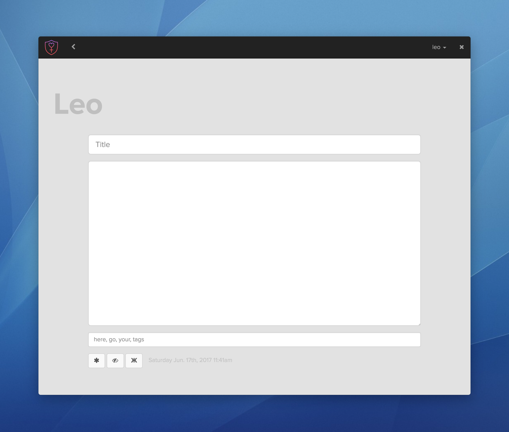

Garden
Mission: Create a JavaScript app that holds mini apps and acts like a workbench for small scripts and rapidly developed tools
DEVELOPMENT: JAVASCRIPT + ELECTRON
The idea for Garden came about while I was going through a time where I was making a lot of small Node-based applets and scripts, some of which used Electron. I decided instead of rewriting basic functions over and over, and in an attempt to make all these bits of code more accessible, I would build a "Garden" in which they could all live.
I developed one single Electron application that allowed for small modules to be dropped in and run. This allowed me to quickly write JavaScript apps or small scripts and run them in a single place with a user interface already constructed.
Try Garden
Grab the repo over on GitHub
cdinto the repo directory- Install Node modules with
npm i - Start 'er up with
npm start
NOTES
Please note Garden is in development and has only been tested on macOS.
You might need to install Electron globally with npm i -g electron
Technologies used
- Electron
- Node.js
- jQuery
- Moment.js
- jsonfile [npm]
- Bootstrap 3